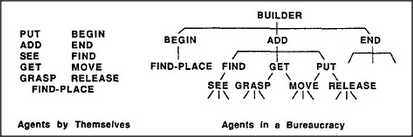

We saw that Builder's skill could be reduced to the simpler skills of Get and Put. Then we saw how these, in turn, could be made of even simpler ones. Get merely needs to Move the hand to Grasp the block that Find just found. Put only has to Move the hand so that it puts that block upon the tower top. So it might appear that all of Builder's functions have been reduced to things that simpler parts can do.
But something important has been left out. Builder is not merely a collection of parts like Find, Get, Put, and all the rest. For Builder would not work at all unless those agents were linked to one another by a suitable network of interconnections.
Could you predict what Builder does from knowing just that left-hand list? Of course not: you must also know which agents work for which. Similarly, you couldn't predict what would happen in a human community from knowing only what each separate individual can do; you must also know how they are organized — that is, who talks to whom. And it's the same for understanding any large and complex thing. First, we must know how each separate part works. Second, we must know how each part interacts with those to which it is connected. And third we have to understand how all these local interactions combine to accomplish what that system does — as seen from the outside.
In the case of the human brain, it will take a long time to solve these three kinds of problems. First we will have to understand how brain cells work. This will be difficult because there are hundreds of different types of brain cells. Then we'll have to understand how the cells of each type interact with the other types of cells to which they connect. There could be thousands of these different kinds of interactions. Then, finally, comes the hardest part: we'll also have to understand how our billions of brain cells are organized into societies. To do this, we'll need to develop many new theories and organizational concepts. The more we can find out about how our brains evolved from those of simpler animals, the easier that task will be.